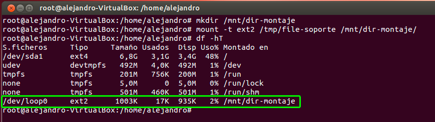
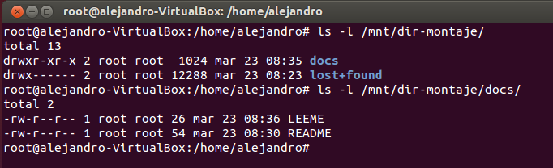

- Módulo: Fundamentos de Hardware
- Título del trabajo: A2: Recuperación de datos
- Componentes del grupo: Alejandro Ortega Freire
- Curso Académico: 2013/2014
- Fecha de entrega: 03 de abril de 2014
1.- Introducción
Se va a emplear una máquina virtual con Sistema Operativo GNU/Linux (se utilizó un Ubuntu 12.04), para simular el borrado de un fichero y su recuperación.
Para el dispositivo de almacenamiento donde se va a aplicar la recuperación, se puede elegir entre los siguientes:
- Un disquete real
- Un fichero
NOTA 1:Dado que se dispone de un portátil sin disquetera se opta por realizar la práctica con un FICHERO.
 Principio del punto 1 |
Principio del punto 1 |  Fin del punto 2 |
Fin del punto 2 |  Índice
Índice
2.- Soporte en fichero
2.1- Crear fichero soporte
- Abrir consola como superusuario.
- Crear un fichero llamado "file-soporte", de tamaño 1MB y lleno de ceros. Para ello se empleó el comando (dataset definition) dd if=/dev/zero of=/tmp/file-soporte bs=512 count=2048 donde:
- if -> indica desde qué fichero/dispositivo se lee
- of -> indica en qué fichero/dispositivo se escribe
- bs -> tamaño del bloque (512 en este caso)
- count -> indica cuantos bloques se copian del archivo de origen
Imagen 1: Creación del fichero file-soporte de tamaño 1MB.
NOTA 2:El comando dd se utiliza para clonar (copiar a bajo nivel) dispositivos. Aunque en este caso se ha usado para crear un archivo de un tamaño determinado.
2.2- Formatear el fichero soporte
- Se crea un sistema de ficheros tipo ext2 dentro del fichero "file-soporte". Comando: mkfs.ext2 /tmp/file-soporte.
Imagen 2: Crear sistema de ficheros tipo ext2.
Principio del punto 2 | Fin del punto 3 | Índice
3.- Escribir en el soporte
3.1- Acceder al sistema de ficheros
NOTA 3:Para poder acceder al sistema de ficheros recién creado se debe montar previamente en un directorio.
- Crear el directorio /mnt/dir-montaje. Comando: mkdir /mnt/dir-montaje.
- Montar el dispositivo soporte. Comando: mount -t ext2 /tmp/file-soporte /mnt/dir-montaje.
- t ext2 -> indica qué tipo de sistema de ficheros se va a montar (ext2 en este caso)
- /tmp/file-soporte -> dispositivo que se monta
- /mnt/dir-montaje -> directorio sobre el que se va a montar el dispositivo
- Comprobar que el sistema de ficheros está montado. Comando: df -hT.

Imagen 3: Montar el dispositivo soporte en el directorio /mnt/dir-montaje.
3.2- Escribir en el sistema de ficheros
- Crear el fichero /mnt/dir-montaje/docs/README.txt. Comando: touch /mnt/dir-montaje/docs/README.txt
- Escribir dentro algunas frases en inglés (se usó la aplicación nano).
Imágenes 4 y 5: Crear fichero README.
- Crear el fichero /mnt/dir-montaje/docs/LEEME.txt. Comando: touch /mnt/dir-montaje/docs/LEEME.txt
- Escribir dentro el nombre del autor de la práctica (se usó la aplicación nano).
Imágenes 6 y 7: Crear fichero LEEME.

Imagen 8: Ficheros README y LEEME.
- Desmontar el sistema de ficheros. Comando: umount /mnt/dir-montaje.
- Comando: vdir /mnt/dir-montaje. La información no se ha perdido. Sólo que el sistema de ficheros no está montado.
- Montar sistema de ficheros y probar vdir /mnt/dir-montaje.
Imagen 9: Desmontar y montar de nuevo el sistema de ficheros.
Principio del punto 3 | Fin del punto 4 | Índice
4.- Eliminar un fichero
- Borrar el fichero /mnt/dir-montaje/docs/README.txt. Comando: rm /mnt/dir-montaje/docs/README.txt.
- Comando: vdir /mnt/dir-montaje.
Imagen 10: Borrar README.
- Desmontar el sistema de ficheros. Comando: umount /mnt/dir-montaje.
Imagen 11: Desmontar el sistema de ficheros.
Principio del punto 4 | Fin del punto 5 | Índice
5.- Recuperar el archivo eliminado
5.1- Clonar el fichero soporte
- Si se introduce el comando cat /mnt/file-soporte se ve en pantalla el contenido (en crudo) del sistema de ficheros. Se puede comprobar que el contenido del fichero eliminado se muestra por pantalla. Por lo tanto ¡no ha sido eliminado compleatamente del sistema de almacenamiento!
Imagen 12: Contenido en crudo del sistema de ficheros.
- Por seguridad, vamos a clonar el fichero soporte:
- Comando: dd if=/tmp/file-soporte of=/mnt/soporte-clonado.alfa
- Comando: dd if=/tmp/file-soporte of=/mnt/soporte-clonado.beta
Imagen 13: Clonado del sistema de ficheros.
5.2- Herramientas de recuperación
- Listado de algunas herramientas de recuperación:
- PhotoRec
- Foremost
- Scalpel
- TestDisk: reparación de discos duros
- Usar alguna herramienta de recuperación de archivos (comando o GUI) sobre la clonación BETA, realizada al dispositivo, para recuperar el archivo README.
5.3- Recuperación con TestDisk (PhotoRec)
- La primera herramienta de recuperación empleada fue TestDisk que incluía la aplicación PhotoRec. Se siguieron los siguientes pasos:
- I.- Instalación de TestDisk con PhotoRec. Se empleó el gestor de paquetes Synaptic.
Imagen 14: Instalación de TestDisk + PhotoRec.
- II.- Iniciar la aplicación photorec. Para ello siendo superusuario escribimos el comando photorec.
- III.- Selección del disco sobre el que se va a hacer la recuperación. El problema surge en este punto puesto que la aplicación sólo permite escoger entre los discos de la máquina sin poder selecciona un fichero soporte como el utilizado en la práctica. Para comprobar el funcionamiento de PhotoRec se optó por añadir un disco de 100MB de capacidad a la máquina virtual, donde se siguió los mismos pasos de arriba. Es decir, darle formato ext2, crear los ficheros README.txt y LEEME.txt y borrar el primero.
Imagen 15: Selección de disco (NO ES POSIBLE SELECCIONAR EL FICHERO SOPORTE).
Imagen 16: Añadir nuevo disco a la máquina virtual.
Imagen 17: Crear una partición en del disco nuevo con el comando fdisk.
Imagen 18: Secuencia de comandos de la práctica hasta el punto anterior a la recuperación del fichero README.txt.
- IV.- Selección en la aplicación PhotoRec del disco sdb.
Imagen 19: Selección de disco.
- V.- Pasos hasta la recuperación.
Imagen 20: Seleccionar la partición.
Imagen 21: Seleccionar el tipo de sistema de archivos de la partición.
Imagen 22: Seleccionar si quieres recuperar del espacio libre (free) o de un disco desaparecido (whole).
Imagen 22: Seleccionar la carpeta donde se escribirán los archivos recuperados.
- VI.- Resultado de la recuperación. El proceso no dió ningún resultado y no sé recuperó el archivo README.txt.

Imágenes 24 y 25: Resultado de la recuperación.
5.4- Recuperación con Scalpel
- La segunda herramienta de recuperación empleada fue Scalpel
- I.- Instalación de Scalpel. Se empleó el gestor de paquetes Synaptic.
Imagen 26: Instalación de Scalpel.
- II.- Antes de iniciar la aplicación es necesario modificar el fichero /etc/scalpel/scalpel.conf. En éste archivo se "descomentará" todos los tipos de archivos que se desea que scalpel recupere. En este caso se quiere recuperar el archivo README.txt, así que se desmarca el comentario de la línea "txt", como se muestra en las imágenes siguientes.
Imágenes 27 y 28: Modificar /etc/scalpel/scalpel.conf.
- III.- Recuperar archivo. Comando: scalpel /mnt/soporte-clonado.beta -o /home/alejandro/Documentos
Imagen 29: Recuperación con scalpel en el soporte-clonado.beta.
- IV.- Resultado de la recuperación. El proceso no dió ningún resultado y no sé recuperó el archivo README.txt.
Imagen 30: Resultado de la recuperación.
- V.- Se probó con el disco duro añadido (sdb) y tampoco se recuperó el archivo README.txt. Sí se obtuvo un archivo llamado 00000000.pgp que no tenía nada que ver.
Imagen 31: Recuperación con scalpel en el disco sdb.
Imágenes 32 y 33: Resultado de la recuperación.
Principio del punto 5 | Índice
Alejandro Ortega Freire 1ºASIR
Fundamentos de Hardware